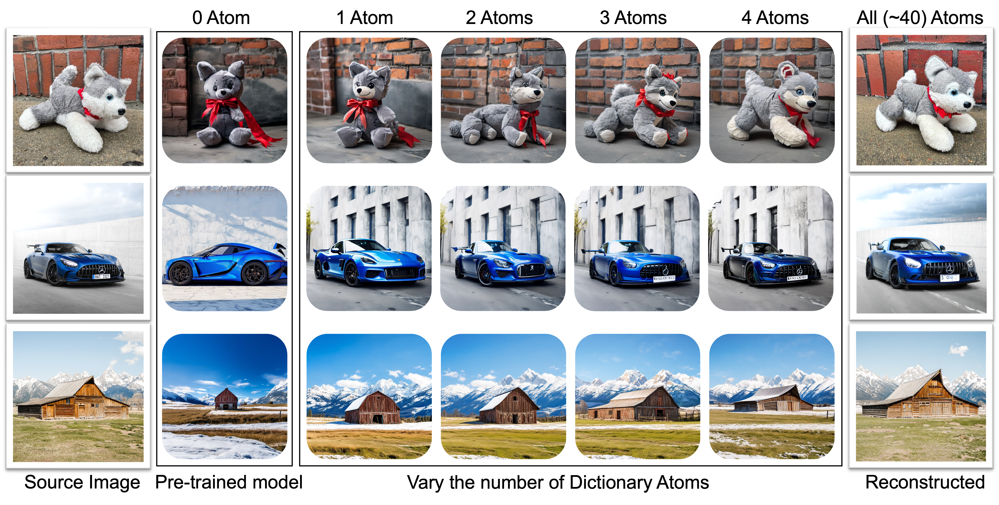
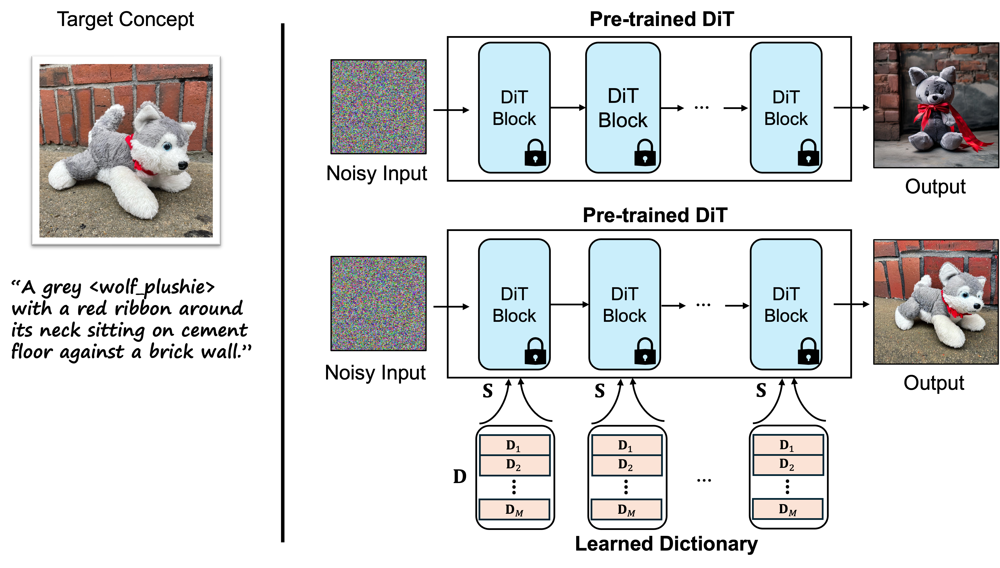
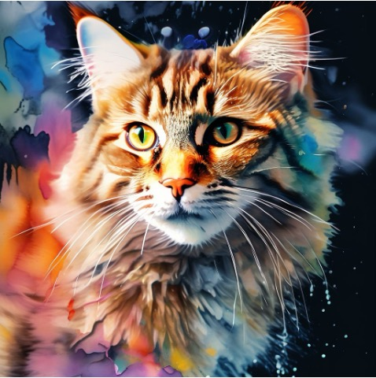
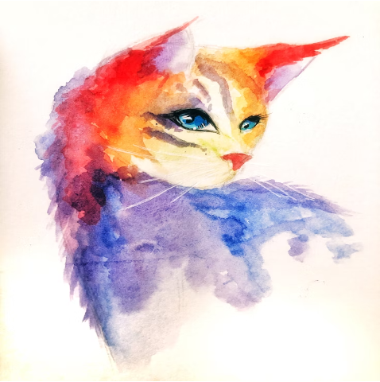
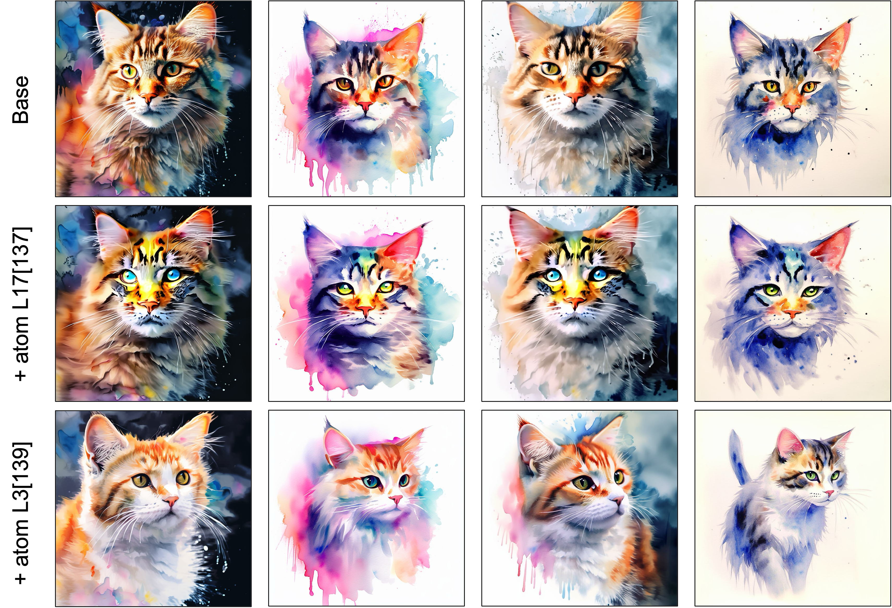
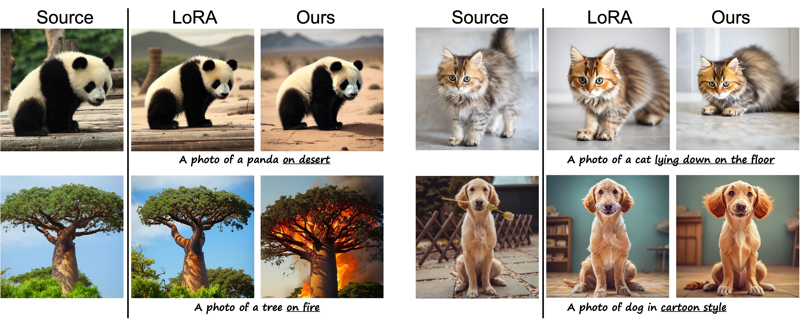
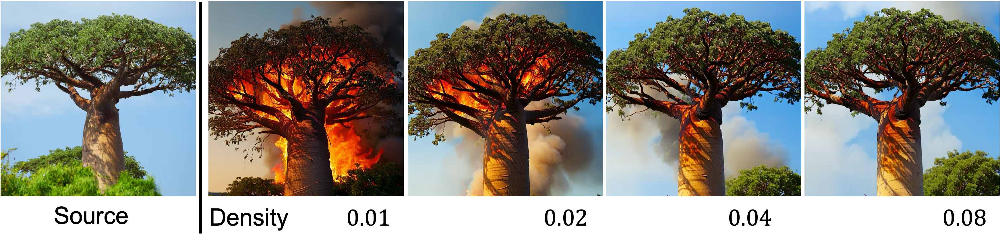
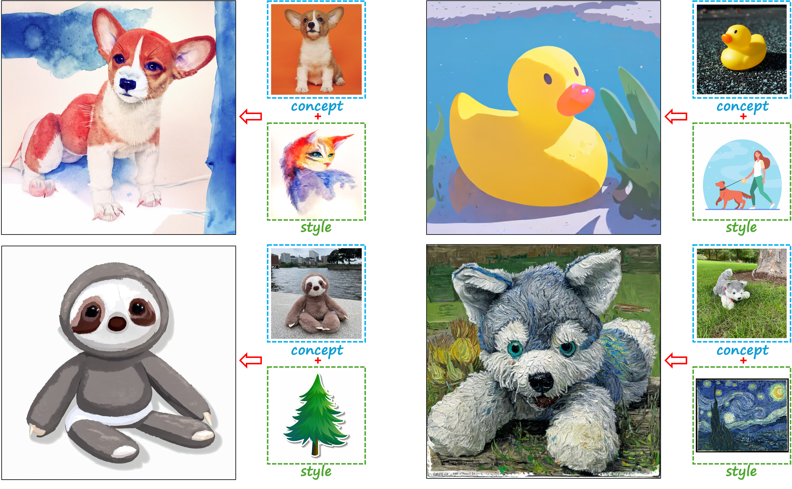

Fine-tuning pre-trained models is effective for adapting these models to downstream tasks. However, in existing fine-tuning methods, the updated representations are formed as a dense combination of modified parameters, making it challenging to interpret their contributions and understand how the model adapts to new tasks.
In this work, we introduce a fine-tuning framework inspired by sparse coding, where fine-tuned features are represented as a sparse combination of basic elements, i.e., feature dictionary atoms. The feature dictionary atoms function as fundamental building blocks of the representation, and tuning atoms allows for seamless adaptation to downstream tasks. Sparse coefficients then serve as indicators of atom importance, identifying the contribution of each atom to the updated representation. Leveraging the atom selection capability of sparse coefficients, we demonstrate that our method enhances image editing performance by improving text alignment through the removal of unimportant feature dictionary atoms.

We visualize how dictionary atoms influence image generation. Use the slider below to adjust the number of atoms involved and observe how they contribute to forming the target concept.
Pre-trained Model
Target Concept

Pre-trained Model

Target Concept
Certain atoms exhibit distinct effects. For instance, atom 137 in layer 17 (L17[137]) introduces a yellow tint to the cat's face, while atom 139 in layer 3 (L3[139]) alters the cat's pose.

Building on our previous observation that adjusting different atoms influences the generated results, we explore leveraging this property for image editing.

The density of involved atoms affects the level of image editing results.

Since concepts or styles are captured by a small number of atoms, combining them becomes a natural way to generate images that reflect both the intended concept and style.
